Пятая часть цикла статей, подробно рассказывающих о протоколе MIDI.
Одной из трех составляющих протокола MIDI является спецификация формата хранения данных (напомню, что две другие составляющие — это формат сообщений и аппаратная спецификация интерфейса). Формат сообщений был рассмотрен в трех первых статьях цикла, сейчас настало время формата хранения. Он был предложен организацией MMA в конце 1987 года и получил название "Стандартные MIDI-файлы" (Standard MIDI Files, SMF).
Цель MIDI-файлов — обеспечить обмен событиями (то есть MIDI-сообщениями, имеющими метку времени) между различными устройствами и программами. До появления стандартных MIDI-файлов аранжировку, подготовленную в одном секвенсоре, невозможно было загрузить в другой из-за несовместимости форматов. Нельзя сказать, что с появлением SMF все производители секвенсоров перешли на этот формат. Тому есть несколько причин, и о них мы также сегодня поговорим.
Поскольку хранение информации непосредственно связано с устройством секвенсоров, остановимся на этом деле подробнее, но лишь в той мере, какая необходима для понимания SMF. А секвенсорам, несомненно, посвятим одну из следующих статей цикла.
События
Сообщение MIDI, снабженное меткой времени, называется событием. Для указания времени могут использоваться разные единицы — тики, внутренние импульсы, время в формате SMPTE и т. п. Важно понять принципиальное отличие события от сообщения. Сообщение "живет" долю миллисекунды реального времени — от момента, когда генерируется источником, до момента, когда поступает к исполнению в приемник. Его можно отловить в процессе передачи по MIDI-кабелю в виде набора импульсов. Событие — это несколько байт информации, записанной в память устройства, на основании которой в будущем, в назначенное время, будет сгенерировано сообщение.
Например, в памяти секвенсора может храниться событие "взять ноту" с меткой времени 100 мс от начала воспроизведения. Вы можете редактировать это событие в двух измерениях: во-первых, изменять параметры самого MIDI-сообщения (в данном случае, высоту или динамику ноты), а во-вторых — перемещать ноту по дорожке, то есть изменять время исполнения сообщения.
События появляются в памяти секвенсора в процессе записи MIDI-сообщений. При нажатии кнопки Record секвенсор включает аппаратный генератор импульсов (тиков) и начинает "слушать" заданный MIDI-вход. Например, при нажатии клавиши на вход поступает сообщение "взять ноту". Секвенсор смотрит — ага, сообщение пришло на 20-й тик, и записывает его в память с меткой 20. Через пару секунд отпустили клавишу — пришло сообщение "снять ноту", внутренний генератор в этот момент радостно отмахал секвенсору 64 тика. Секвенсор сохраняет сообщение с меткой 64. Вот теперь мы имеем дело с двумя событиями — Note On и Note Off. При воспроизведении снова включается генератор импульсов. Когда подходит 20-й тик, на MIDI-выход секвенсора отправляется сообщение Note On, 64-й тик — Note Off. Мы записали, а затем воспроизвели действия исполнителя!
Очевидно, то же самое можно сделать и в "офлайне", то есть без необходимости живого исполнения. Щелкнув мышью в нужном месте дорожки (и заранее выбрав длительность ноты), мы построим в памяти секвенсора точь-в-точь предыдущую картину.
Типы памяти
Теперь самое время применить два пугающих компьютерных термина: первичная и вторичная память. Первичная (или внутренняя) память — это память секвенсора, куда записываются сообщения и где хранятся события в течение всего сеанса работы. Содержимое этой памяти сбрасывается при выключении питания. Такая трактовка больше подходит для аппаратных секвенсоров. В программных секвенсорах первичная память — это просто-напросто оперативная память компьютера. Чтобы сохранить содержимое первичной памяти на длительный срок, используется вторичная память, или, иначе, носители данных. Это может быть дискета, жесткий диск, смарт-карта и тому подобное.
Объем первичной памяти в аппаратных секвенсорах и рабочих станциях (напомню, рабочая станция — это тон-генератор и секвенсор в одной коробке) обычно выражается в количестве хранимых нот (например, 200 тыс.). Иногда объем выражается в событиях, в этом случае нужно быть настороже — одна нота требует для хранения два события (нажатие и отпускание клавиши), а поворот звуковысотного колеса или послекасание могут порождать до 100 и более событий. Случается, объем памяти секвенсора выражают в родных компьютерных единицах — килобайтах. Но это также не очень удобно — одно событие может занимать разное количество байт (от пяти до нескольких десятков).
В современных программных секвенсорах объем первичной памяти мало кого волнует — даже на машине со 128 Мбайт ОЗУ про какие-либо ограничения при работе с MIDI-данными можно забыть. Кроме того, есть секвенсоры, которые могут воспроизводить аранжировку непосредственно с диска, без загрузки в первичную память (и, кстати, записывать тоже), что вообще стирает различие между двумя видами памяти.
Во вторичной памяти данные, как правило, записываются в файл. Формат этого файла у большинства секвенсоров свой, закрытый, что затрудняет обмен аранжировками, созданными в разных устройствах или программах. Ранее говорилось, что это и послужило основной причиной создания SMF.
Измерение времени
На самом деле, внутри секвенсора никаких "тиков" нет. Есть аппаратный таймер, который генерирует импульсы со строго постоянной частотой (например, каждую микросекунду). Заставлять музыкантов измерять время в микросекундах было бы чудовищным издевательством, как, впрочем, и в других единицах реального времени (секундах, минутах). Музыканты привыкли мыслить в тактах и долях, а время выражать в относительных единицах (длительностях нот), зависящих от текущего темпа.
"Нет проблем, — ответили производители, — пусть меряют так, как им удобнее". Только минимальной единицей измерения будет не какая-нибудь 32-я длительность, а условно взятый тик (единица еще мельче, так, что, например, в одной тридцать второй может содержаться 48 тиков). Поскольку еще с классической эпохи темп измеряется количеством четвертей в минуту (BPM, beats per minute), то за основную длительность решили взять четверть и указывать количество тиков, приходящихся на четверть — PPQN (Pulse Per Quarter Note). Чем больше PPQN, тем лучше разрешение секвенсора и тем точнее по времени он может фиксировать сообщения при записи и выдавать их на MIDI-выход при воспроизведении. Большинство секвенсоров позволяют задавать PPQN произвольно — например, от 32 до 1536 тиков на четверть (современные секвенсоры — до 15360 PPQN).
Тик — темпозависимая единица: чем быстрее темп, тем короче интервал между тиками в единицах реального времени. Этот интервал можно найти по формуле на рис. 1.
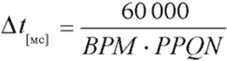
Например, при темпе 120 BPM и разрешении 96 PPQN тики будут следовать через каждые 5,208 миллисекунды. При том же разрешении и темпе 180 BPM интервал между тиками сократится до 3,472 мс. Как же секвенсор отсчитывает тики, если его внутренний таймер выдает импульсы каждую микросекунду? Да очень просто: на основании текущего темпа и разрешения в четверти, точно по указанной формуле. Так как в одной миллисекунде содержится 1000 микросекунд, то в последнем примере секвенсор сгенерирует очередной тик тогда, когда получит от таймера 3472 импульса.
Когда высокое разрешение не имеет смысла
Если секвенсор и тон-генератор находятся "под одной крышей" (рабочая станция или компьютер с программным секвенсором и синтезатором на звуковой плате, либо виртуальным синтезатором), то внутреннее разрешение такой системы может быть сколь угодно большим (число 15360 PPQN впечатляет). Это позволяет осуществить синхронизацию MIDI- и аудиоданных с точностью до семпла. Но как только мы соединяем секвенсор и тон-генератор MIDI-кабелем посредством MIDI-интерфейса, высокое разрешение утрачивает актуальность.
Почему? Напомню, что один байт передается по MIDI-интерфейсу в течение 320 микросекунд. А это значит, что, например, сообщение о взятии ноты (состоящее из трех байт) будет передаваться 960 мкс или почти целую миллисекунду. Теперь представим, что в секвенсоре при темпе 120 BPM и разрешении 2048 PPQN запрограммированы две ноты с интервалом два тика между собой. В единицах реального времени это составляет 488 микросекунд. Так вот: тон-генератор не сможет получить вторую ноту через 488 микросекунд после первой, а реально — только через 960 мкс. Так что исполнит он ее спустя не два тика, а почти четыре.
Отсюда вывод: при работе через MIDI-интерфейс (когда секвенсор и тон-генератор разнесены) разрешение секвенсора более одного тика на 960 микросекунд не имеет смысла. Чтобы узнать, сколько это будет в PPQN, можно воспользоваться формулой на рис. 2.
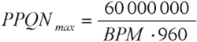
В таблице на рис. 3 для разного темпа показаны значения PPQN, превышать которые бессмысленно.
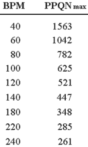
Положение события на линейке времени задается в секвенсоре, как правило, в формате "такты : доли : тики", например, 22:3:152. То есть: двадцать второй такт, третья доля, 152-й тик от начала третьей доли. Подобный принцип отсчета времени (англоязычный термин — Timebase) называется музыкальным (musical), поскольку он привычен и удобен для музыкантов. Обратите внимание, что для работы в таком формате необходимо знать текущий музыкальный размер. То есть, какое количество долей содержит такт и чему равна каждая доля.
Так, при размере 4/4 доля равна четверти, а такт содержит четыре доли. При разрешении 384 PPQN в одной доле будет 384 тика, а в каждом такте соответственно 1536 тиков (384 x 4). При размере 6/8 и том же разрешении в одной доле будет 192 тика (восьмая в два раза короче четверти), а в такте — шесть долей или 1152 тика (192 x 6). Таким образом, запись 22:3:152 в первом случае означает 35096 тиков от начала песни (22 x 1536 + 3 x 384 + 152), а во втором — 26072 тика (22 x 1152 + 3 x 192 + 152).
Итак, для определения положения события в единицах реального времени на основе формата "такты : доли : тики", необходимо знать три параметра: текущий темп, музыкальный размер и разрешение в тиках на четверть (PPQN).
Существует и другая возможность отсчета времени, когда положение события на дорожке выражается в абсолютных единицах, не зависящих от темпа, чаще всего в формате времени SMPTE — "часы : минуты : секунды : кадры". Такой принцип отсчета времени называется "time-code-based" (основанный на таймкоде, абсолютный). Необходимость в нем возникает при совместной работе секвенсора с магнитофоном или кино/видеооборудованием. Монтажные операции с кино-, видео- и аудиоматериалом, указание позиций начала и окончания записи удобнее производить, привязываясь к абсолютной шкале, а не к тактам и долям.
В этом случае координата события на линейке времени зависит от текущего темпа. Так при темпе 120 BPM первая доля второго такта может иметь SMPTE-время 00:00:02:00, а при темпе 60 BPM — 00:00:04:00. При положении события внутри кадра (между секундами), его координата будет отличаться также и при разном формате кадра (числе кадров в секунду). Подробнее о SMPTE и MIDI Time Code можно прочитать в предыдущей статье цикла.
Величины переменной длины
Хватит лирических отступлений, сейчас наша задача — разобраться в формате хранения данных. И первая трудность, с которой столкнулись разработчики SMF, — как сохранять время наступления события.
Здесь есть два варианта: хранить для каждого события время от начала песни, либо от последнего события перед ним (на том же канале). Однако первый вариант не рационален, ведь чаще всего интервал между событиями невелик, соседние события имеют близкое друг к другу время исполнения. Так, в пассаже из трех нот, первая может иметь время, скажем, 22:3:152, вторая — 22:3:244, третья — 22:3:288. Для сохранения этих чисел (переведенных в тики от начала песни) нужно зарезервировать как минимум четыре байта на каждое. Если же пойти по второму пути, то вместо трех больших чисел можно сохранить одно большое стартовое (22:3:152), а за ним — два маленьких, разницу в тиках между первой и второй, и второй и третьей нотами (в данном случае, 92 и 44), для них достаточно одного байта. Но все равно проблема остается: в зависимости от события нужно отводить разное число байт для сохранения времени.
Если бы SMF разрабатывался в настоящее время (да еще фирмой Microsoft, которая вообще мало заботится о размере своих файлов и потребной памяти), на эту проблему закрыли бы глаза. Выделили под сохранение времени фиксированное поле, скажем, 8 байт на событие, и не мучались. Однако в 1988 году первичная (оперативная) память стоила очень дорого, на счету был каждый байт, да и вторичная (дисковые носители) имела очень скромный объем. Поэтому разработчики SMF хотели получить максимально компактный формат.
Было решено сохранять дельта-время, то есть разницу в тиках между данным событием и предыдущим (либо началом песни). Например, если первое событие — взятие ноты До первой октавы — произошло в момент 40 тиков от начала песни, то его дельта-время будет равно 40. Если спустя четыре тика будет взята нота Фа, то ее дельта-время будет равно 4. Если два события происходят одновременно, то одному из них назначается дельта-время, равное нулю. Если событие происходит точно в начале песни, оно также имеет нулевое дельта-время. Однако следующее событие может случиться и через полтора часа (то есть, через несколько миллионов тиков). Как быть в этом случае? Ведь память нужно экономить, а отводить под дельта-время фиксированное поле размером в несколько байт нежелательно.
На помощь приходят так называемые величины переменной длины. Они представляют удобный способ записи целых чисел — от самых малых до самых больших, без необходимости отводить под число фиксированное количество байт. Биты исходного числа упаковываются в один или более байтов: в каждый байт по семь бит (справа, биты с 0 по 6-й). Старший бит в байте является служебным; все байты в серии, кроме последнего, должны содержать в нем единицу, последний — ноль. Несколько примеров упаковки показаны на рис. 4.
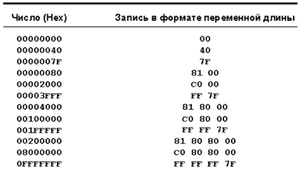
Например, нужно упаковать в формат переменной длины число 64 (шестнадцатеричное 0x40). В двоичном виде это число записывается как 0100 0000. Здесь как раз семь значащих бит, поэтому упаковывается это число в один байт без изменений — 0100 0000 (он же является и последним байтом серии), старший бит равен 0.
Теперь число 128 (0x80). В двоичном виде записывается как 1000 0000. Здесь восемь значащих бит, поэтому в один байт все не влезет, нужно разбивать на два. Первый байт должен иметь в старшем бите единицу, второй (как завершающий байт серии) — ноль. Во второй байт помещаем семь младших битов исходного числа, получается 0 000 0000. Оставшийся один бит (единицу) помещаем в правую часть первого байта — получается 1000 0001. В итоге, число 0x80 записывается в виде двух байт: 0x81 0x00. Распаковка происходит очень просто. Мы не знаем заранее, сколько байт содержится в серии. Считываем первый байт — 1000 0001. Старший служебный бит (1) говорит о том, что это не последний байт серии, есть еще байты. Служебную единицу отбрасываем, остается семь бит — 000 0001. Считываем второй байт — 0000 0000. Старший служебный бит (0) говорит о том, что это завершающий байт серии (то есть в серии всего два байта). Служебный бит отбрасываем. Остаются также семь бит — 000 0000. Дописываем к ним слева семь бит, выделенных из первого байта, получаем 000 0001 000 0000. Отбросив первые шесть нулей, получаем искомое число 1000 0000 (0x80).
Итак, метод величин переменной длины позволяет под разные числа отводить разное количество байт: для чисел в диапазоне от 0 до 127 — один байт, от 128 до 16383 — два байта и так далее. Максимальное число, представляемое таким способом, в принципе, не ограничено. Однако в SMF длина серии ограничивается четырьмя байтами (три с установленным старшим битом и один завершающий, с нулевым). В результате максимальное дельта-время может составлять 0x0FFFFFFF (или 268 435 455 тиков), что при темпе 500 BPM и разрешении 96 PPQN составляет около четырех суток. Более чем достаточно!
В форме величин переменной длины в SMF указывается не только дельта-время, но и длина некоторых событий.
Interchange File Format (IFF)
Структура стандартного MIDI-файла почти полностью заимствована из формата IFF (Interchange File Format), разработанного в 1985 году компанией Electronic Arts. Это формат хранения и обмена данными, который уже почти двадцать лет облегчает жизнь как пользователям, так и разработчикам программного обеспечения. Компания Electronic Arts не только предоставила открытую документацию, но также исходный код на языке C для считывания и записи IFF-файлов.
Формат IFF является обратно совместимым и расширяемым. Первое означает, что новая версия программы может без проблем читать файлы, созданные предыдущей версией. Второе — для хранения дополнительной информации не нужно придумывать новый формат, достаточно ввести собственное расширение в IFF. Структура формата позволяет обмениваться данными программам разных производителей, не имеющих между собой соответствующих бизнес-соглашений. Все это радует и пользователей — сохранив данные в формате IFF, они больше не прикованы к закрытому формату своей системы и могут использовать данные в любой IFF-совместимой программно-аппаратной среде.
Файл формата IFF представляет собой набор данных, организованных таким образом, что различные, не связанные друг с другом программы могут их прочитать. С другой стороны, программа может сохранить в IFF специфическую информацию, которая имеет смысл только для нее самой. Структура IFF позволяет легко это сделать. Другие программы, которые не знают, как обращаться с такой информацией, могут ее проигнорировать без ущерба для чтения основного содержимого.
Существует несколько типов файлов IFF. Например, файлы ILBM и GIFF содержат в себе графическую информацию, файлы SMUS — нотную запись, файлы AIFF и WAVE — цифровой звук.
Файл IFF состоит из однотипных элементов, называемых блоками (chunks). Блок — это структура данных, состоящая из буквенного идентификатора (четыре ASCII-символа), размера блока (четыре байта) и самих данных (рис. 5). Блок удобно представлять как оболочку, в которую "завернуты" данные. Сами данные могут содержать что угодно: графику, текст, анимацию, звук, набор 3D-объектов и так далее.
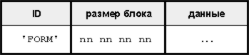
Блоки в IFF-файле могут быть вложенными, рис. 6. Фактически, IFF-файл — это не что иное, как блок верхнего уровня, содержащий внутри себя один или несколько других блоков. Такой принцип хранения данных позволяет "заворачивать" в файл несколько разнородных данных, в том числе и несколько файлов IFF, что напоминает уже файловую систему внутри файла. Правда, при вложенной организации данных есть один недостаток — файл становится сложно интерпретировать, вычленять из него блоки.
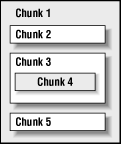
Большинство IFF-файлов содержат блок верхнего уровня с идентификатором "FORM". В него входят другие блоки (рис. 7). Единственными данными блока FORM являются четыре байта, описывающие тип файла (например, "ILBM", InterLeaved Bit Map). Непосредственно за ними размещаются вложенные блоки, например, "BMHD" (заголовок изображения), "CMAP" (палитра) и "BODY" (сами пиксели). Названия блоков и формат данных придумывает разработчик конкретного типа файла. Другие программы, если встречают блок с незнакомым названием, могут спокойно пропустить его, ориентируясь по полю, содержащему длину блока.
Все числовые данные в файлах IFF хранятся в порядке big-endian, то есть сначала хранится старший байт числа (MSB), затем — младший. Подробнее об этом рассказано во врезке. Блоки внутри файла всегда должны начинаться с четного байта. Если предыдущий блок содержит нечетное число байт, он дополняется нулевым байтом до четного.
С какого конца сохранять?
Компьютерная память состоит из ячеек, в каждую из которых помещается ровно один байт. Чтобы обратиться к ячейке (записать или считать байт), процессор использует так называемый адрес в памяти. Это просто целое число, присвоенное ячейке операционной системой (да простят меня компьютерные специалисты за такое упрощение). В реальной жизни одного байта, как правило, недостаточно. Даже для хранения целых чисел применяются слова, то есть группы из двух байт, двойные или четверные слова (соответственно, четыре или восемь байт, подробнее см. первую часть цикла). То есть число хранится в нескольких соседних байтах.
На рис. 8 показаны два возможных способа размещения их в памяти, на примере двойного слова. Первый способ — байты сохраняются в памяти последовательно, старший байт по наименьшему адресу. То есть, по адресу N хранится MSB старшего слова, затем LSB старшего слова (N + 1), MSB младшего слова (N + 2), LSB младшего слова (N + 3). Такой способ принято называть big-endian (или "прямое размещение байтов"). Во втором способе — все с точностью до наоборот, старший байт хранится по наибольшему адресу: LSB младшего слова (N), MSB младшего слова (N + 1), LSB старшего слова (N + 2), MSB старшего слова (N + 3). Этот способ принято называть little-endian — "обратное размещение байтов".
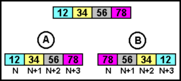
То есть различие состоит в том, "с какого конца" (end) сохраняется многобайтовое значение. Термины "big-endian" и "little-endian" были предложены в одной из статей по данному вопросу со ссылкой на книгу Джонатана Свифта "Приключения Гулливера". Как известно, в Лилипутии возникло движение Тупоконечников (Big-Endians), не желавших выполнять указ императора, предписывающий разбивать вареные яйца только с острого конца. В компьютерном мире противостояние big/little-endian выглядит очень похоже.
Сторонники обратного размещения (little-endian) утверждают, что переставленный порядок байтов в памяти упрощает выполнение арифметических операций с многобайтовыми значениями, так как суммируемые первыми младшие значащие байты хранятся в младших адресах.
Схема little-endian используется в Intel-совместимых процессорах, начиная от Intel 8080 и заканчивая Intel Pentium IV. Прямое размещение (big-endian) — в процессорах Sun Spark, Motorola 68000 (ранняя линейка компьютеров Apple) и многих RISC-процессорах. А вот процессоры PowerPC и Intel Itanium понимают сразу оба формата данных (их иногда называют "bi-endian").
Однако существенным является не столько то, как компьютер хранит данные "внутри себя", а как сохраняет их "снаружи", в файлах. Это с практической точки зрения гораздо важнее. Например, если слово "UNIX" сохранено в файл big-endian системой (в виде двух двухбайтовых слов), то little-endian система прочитает его как "NUXI". В компьютерном жаргоне это так и называется — "проблема NUXI". Аналогичные трудности могут возникать при сохранении графических изображений, поскольку цвета кодируются многобайтовыми числами. Например, файлы программы Adobe Photoshop и формат JPEG используют схему big-endian, а файлы формата GIF и BPM — little-endian.
Во "внеплатформенном" формате стандартных MIDI-файлов (SMF) используется способ big-endian, то есть старший значащий байт слова (MSB) сохраняется первым.
Структура SMF
Стандартные MIDI-файлы, так же, как и IFF-файлы, состоят из блоков (Chunks). Всего есть два типа блоков: блок заголовка (Header Chunk) и блок трека (Track Chunk). В файле SMF может быть только один блок заголовка и один или более блоков трека. Блок имеет типичную IFF-структуру: первые четыре байта — идентификатор, следующие четыре байта — длина блока в байтах, исключая восемь байт тип/длина. Идентификатор блока заголовка — это четыре символа "MThd", блока трека — четыре символа "MTrk". Такая структура позволит в будущем определять новые типы блоков, а незнакомый блок может быть легко проигнорирован на основе его длины. Спецификация SMF предупреждает: "Программы должны быть готовы, встретив блоки неизвестных им типов, игнорировать их".
Блок заголовка содержит общую информацию о файле, блок трека — поток MIDI-сообщений с метками времени. Кроме того, в MIDI-файле сохраняется дополнительная информация, необходимая секвенсорам: темп, размер, тональность, настройки метронома и тому подобное. Эта информация по MIDI-интерфейсу не передается, а образующие ее события называются мета-событиями.
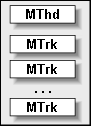
MIDI-файл всегда начинается с блока заголовка, за которым следуют один или более блоков трека (рис. 9). То есть, любой стандартный MIDI-файл начинается с четырех букв "M", "T", "h", "d". А это означает, что MIDI-файл не удовлетворяет спецификации IFF (которая требует, чтобы каждый IFF-совместимый файл начинался с блока верхнего уровня одного из трех типов — "FORM", "CAT" или "LIST"). Есть и другие отличия: SMF не может содержать вложенных блоков, а длина блока не обязательно должна быть четной. Однако преобразование SMF в IFF-совместимый файл выполняется просто. Достаточно дополнить нулевым байтом нечетные по длине блоки (если таковые есть) и поместить все содержимое в FORM-блок. Подобная операция используется в формате RMID, предложенном Microsoft (см. врезку).
Microsoft RIFF
Формат IFF оказался очень привлекательным в качестве каркаса для хранения данных любого типа, особенно мультимедийных (сочетающих в себе звук, изображение, текст и т. п.). В 1991 году, когда оболочка Windows начала "набирать обороты", фирма Microsoft, не мудрствуя лукаво, решила приспособить формат IFF в качестве универсального мультимедиа-формата для Windows. Была только небольшая проблема: стандарт IFF требует сохранения числовых величин по способу big-endian, а для всего Intel-совместимого парка процессоров, на котором работала Windows, родным форматом является little-endian. Что сделала Microsoft? Просто заменила идентификатор блока верхнего уровня "FORM" на "RIFF" (Resource Interchange File Format), а числовые данные стала хранить в родном для Intel формате little-endian.
В формате RIFF и по сей день хранятся знакомые всем файлы AVI и WAVE. Пользователи об этом не догадываются, поскольку привыкли определять тип файла по его расширению. А программисты знают, что каждый WAVE- или AVI-файл начинается с четырех букв "RIFF", затем, как и положено для файла IFF, идет четырехбайтовое поле длины файла, затем — как в блоке FORM, тип файла, также четыре символа ("WAVE" или "AVI").
Кроме цифрового звука и видеоклипов, Microsoft на основе RIFF предложила формат для хранения изображений RDIB (Device Independent Bitmap, расширение RDI), а также формат-файловую систему из нескольких RIFF-файлов в одном (Bundle, расширение BND). Учитывая то, что стандартные MIDI-файлы не удовлетворяют в полной мере формату IFF, Microsoft предложила "заворачивать" их в блок с именем "data" внутри файла RIFF. В результате родился гибрид под названием RMID (расширение RMI). По сути, это все тот же стандартный MIDI-файл, только с приписанной к началу файла шапкой из двадцати байт (рис. 10).
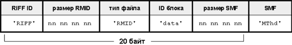
В таком виде польза от RMID небольшая. Однако, как и всякий файл IFF, он позволяет включать дополнительные блоки. Этим, в свою очередь, воспользовалась организация MMA, предложив в 2000 году объединять в файле RMID стандартный MIDI-файл и файл DLS (Downloadable Sounds) c семплами. Деталей этого процесса мы коснемся в одной из следующих статей цикла.
Числовые величины хранятся в MIDI-файле в соответствии с требованиями IFF — в формате big-endian (MSB идет первым). Например, если длина блока равна восьми байтам, то она будет храниться как 0x00 0x00 0x00 0x08.
В любой файловой системе MIDI-файл — это просто последовательность восьмибитных байтов. На компьютерах Macintosh этот байтовый поток хранится в ветви данных файла (и имеет тип "Midi") или в буфере обмена (тип данных — "Midi"), см. врезку.
Файлы Macintosh
В большинстве файловых форматов файл представляет собой один восьмибитный поток данных, который считывается и записывается прикладной программой "как есть". Однако встречаются и хитрости, такие, как несколько потоков данных в одном файле. Например, файл Macintosh на самом деле состоит из двух файлов (частей), связанных с одной и той же записью каталога.
Первая часть (data fork, ветвь данных) предназначена для прикладных программ — они туда сохраняют и оттуда считывают данные. Вторая часть (resource fork, ветвь ресурсов) предназначена для операционной системы. Там хранится информация, необходимая средству Finder: иконки файла, используемые окна, раскладки клавиатуры, настройки шрифта и тому подобное.
Форматы SMF
Обычно секвенсоры используют свой собственный формат хранения аранжировок. Это вызвано тем, что структура данных, разработанная под возможности конкретной программы, гораздо эффективнее, с ней просто-напросто легче работать. В свой формат можно записывать дополнительные данные, например, по настройке пользовательского интерфейса (положение и размер окна, шрифт и так далее). Кроме того, компактность стандартных MIDI-файлов (в частности, величины переменной длины для хранения времени наступления событий) оборачивается неудобством: для работы с аранжировкой все дельта-времена в файле нужно "распаковать", а при сохранении файла снова "запаковать".
С другой стороны, SMF — это переносимый межплатформенный формат, в нем можно определять любые дополнительные блоки для хранения специфических данных. Например, один секвенсор может сохранить в блоке с именем "Mtr" состояние метронома — включен или выключен. Другому секвенсору этот блок не помеха, он может определить в том же файле и несколько своих специфических блоков. Так что часть секвенсоров использует формат SMF напрямую, он является для них "родным". Другие позволяют импортировать и экспортировать MIDI-файлы при необходимости.
Для поддержки разных типов секвенсоров и другого оборудования стандартные MIDI-файлы подразделяются на три разновидности или формата: 0, 1 и 2.
Файл формата 0 содержит один трек, в который помещаются события со всех шестнадцати MIDI-каналов. Это наиболее простой формат для обмена данными, так как в нем не учитывается исходная структура треков в секвенсоре (какой трек на какой MIDI-канал назначен). Файл формата 0 более приспособлен для переноса данных на такие устройства, как микшеры и процессоры эффектов, чем для сохранения аранжировок. При записи файла в формате 0 секвенсор просто сливает все сообщения со всех MIDI-каналов в один трек. Соответственно, при загрузке файла мы получаем одну дорожку, редактировать события на которой проблематично, поскольку события для разных каналов перемежаются друг с другом. Большинство секвенсоров имеют функцию разделения подобного "микса" по отдельным трекам, на каждый из которых помещаются события для одного MIDI-канала.
Файл формата 1 содержит отдельный трек для каждого MIDI-канала, что отражает привычную структуру аранжировки в секвенсоре. Файл формата 2 содержит в себе несколько независимых произведений (или законченных паттернов), каждый паттерн состоит из одного трека, содержащего сообщения по всем 16-ти каналам. Этот формат предполагалось использовать в тех секвенсорах, которые могут работать с независимыми паттернами, исполняемыми несколькими инструментами одновременно. Однако формат 2 был повсеместно проигнорирован и в настоящее время рассматривается в спецификации как "не предназначенный для секвенсоров".
Одним из главных отличий формата 0 и 1 является способ размещения мета-событий. В формате 0 мета-события темпа и размера (так называемая карта темпа) перемешиваются с другими MIDI-сообщениями. Кроме того, названия треков в этом формате не сохраняются. В формате 1 первый трек в файле отводится исключительно под карту темпа и другие мета-события, такие как Sequence/Track Name, Sequence Number, Marker, SMPTE Offset (см. далее).
В случае отсутствия в файле карты темпа, темп принимается равным 120 BPM, а размер — 4/4.
Организация MMA в будущем может разработать другие форматы SMF для поддержки новых структур данных в секвенсорах.
Блок заголовка ("MThd")
Блок заголовка содержит базовую информацию о файле. Структура блока показана на рис. 11. В поле длины всегда содержится число 6 — по числу байт данных заголовка, следующих за этим полем. Данные заголовка представляют собой три 16-битных слова. Первое слово (format) — формат SMF, может принимать одно из трех значений — 0, 1 и 2. Второе слово (ntrks) — число блоков треков (то есть самих треков) в файле. Для файла формата 0 оно будет всегда равно единице.
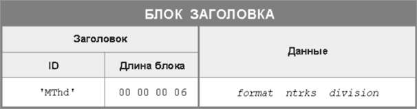
Последнее слово блока заголовка (division) задает способ измерения времени (timebase). Как говорилось ранее, существуют два способа: музыкальный (такты/доли) и абсолютный (time-code-based), основанный на абсолютном времени в формате SMPTE. В любом случае дельта-время в файле SMF измеряется тиками: при музыкальном способе задается количество тиков, приходящихся на четверть (то есть, PPQN), при абсолютном — количество тиков в одном SMPTE-кадре. Если старший (15-й) бит поля division сброшен в ноль, то используется музыкальный способ, а оставшиеся 15 бит содержат PPQN (до 32767), рис. 12. Если старший бит установлен в единицу, то используется абсолютный способ. В младшем байте (биты с 0 по 7) хранится число тиков на кадр, в старшем (биты с 8 по 15) — формат кадра SMPTE, выраженный отрицательными значениями (-24, -25, -29, -30). При этом число -29 соответствует формату 30 fps Drop Frame (см. предыдущую статью цикла).
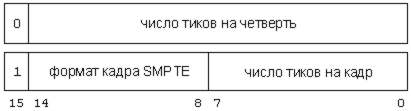
Отрицательные числа выбраны потому, что записываются в виде двоичного дополнения (см. предыдущую статью), то есть содержат в старшем бите единицу. А эта единица как раз и является признаком абсолютного способа отсчета времени. Число тиков на кадр хранится в положительном варианте и обычно принимает одно из следующих значений: 4 (разрешение как в MIDI Time Code, когда на кадр приходятся четыре сообщения Quarter Frame), 8, 10, 80 (разрешение одного бита в кадре SMPTE) или 100.
Такая система позволяет указывать абсолютное время наступления события с точностью до 1/128 кадра. Кроме того, если задать формат кадра 25 fps и разрешение 40 тиков на кадр, то каждый тик будет соответствовать одной миллисекунде. Поле division в этом случае будет иметь значение 0xE728, байт 0xE7 — это запись числа -25 в дополнительном коде, а 0x28 — это число 40 в шестнадцатеричном представлении.
Блок трека ("MTrk")
В блоке трека хранятся сами события, то есть MIDI-сообщения, снабженные меткой времени. В блоке должно присутствовать хотя бы одно событие. Структура блока трека одинакова для MIDI-файлов любого формата (0, 1 и 2), рис. 13.
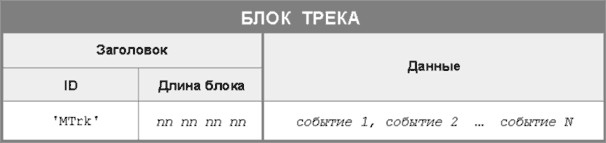
Событие состоит из дельта-времени и самого сообщения MIDI, рис. 14. Напомню, что дельта-время хранится как величина переменной длины.
Типы событий
В отличие от сообщений MIDI, для событий в SMF принята несколько иная классификация. События делятся на три типа: MIDI-события, SysEx-события и мета-события. Первые представляют собой обычные сообщения канала. Они могут быть сохранены (так же, как и при передаче) методом Running Status (то есть, один статус-байт на все однотипные сообщения серии, подробнее см. третью статью цикла). Первое событие в блоке трека должно всегда начинаться со статус-байта.
SysEx-события выделены в особую категорию, поскольку эксклюзивные сообщения имеют произвольную длину. Чтобы не заставлять программу искать окончание сообщения по байту 0xF7 (EOX), спецификация SMF требует сохранять SysEx-сообщения с явным указанием их длины. Сначала сохраняется статус-байт 0xF0 (признак начала SysEx), затем — длина сообщения в формате величины переменной длины (то есть число байтов, следующих за 0xF0, кроме самих байт, содержащих длину), затем — тело сообщения вместе с байтом EOX, рис. 15. Например, сообщение 0xF0 0x41 0x14 0x00 0x07 0xF7 будет сохранено в SMF как 0xF0 0x05 0x41 0x14 0x00 0x07 0xF7.
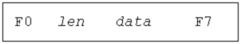
К сожалению, попадаются MIDI-устройства, которые в нарушение спецификации MIDI передают сообщения SysEx маленькими порциями. Этот способ не имеет ничего общего с пакетной передачей данных, затронутой в третьей статье цикла. Например, синтезаторы Casio серии CZ при сбросе дампа с настройками пэтчей ведут себя очень "некультурно": начинают посылку SysEx (со статус-байта 0xF0), передают несколько байт, затем делают паузу, затем передают следующую небольшую порцию (без опознавательных знаков), затем еще пауза, следующая порция и т. п. Только в конце последней порции передается байт EOX. Самое смешное, подобные устройства требуют загрузки дампа точно таким же способом, с теми же временными интервалами между порциями.
Бедный секвенсор не знает, что делать — получается, что каждому принятому кусочку нужно назначить свое дельта-время, хотя кусочек этот не является самостоятельным сообщением MIDI, а только частью большой синтаксической конструкции. Но выход нашли, поощрив тем самым нерадивых разработчиков устройств. Первая порция имеет статус-байт 0xF0, она сохраняется как обычное событие. В начало второй порции (и всех остальных) дописывается статус-байт 0xF7 (EOX), чтобы сделать порцию полноценным сообщением с собственным статус-байтом. Хоть этот байт и зарезервирован как признак конца SysEx, в данном случае секвенсор понимает, что он отмечает начало очередной порции. Байт EOX в конце последней порции завершает сообщение SysEx. Между порциями не должно храниться никаких других MIDI-событий.
Вот пример хранения многопакетного сообщения SysEx. Предположим, были переданы байты 0xF0 0x41 0x12 0x00, затем последовала задержка в 200 тиков, затем последовали байты 0x36 0x15 0x03 0x51 0x20 0x00, затем — задержка в 100 тиков, затем — байты 0x41 0x02 0x00 0xF7. В MIDI-файле это будет сохранено так, как показано на рис. 16.
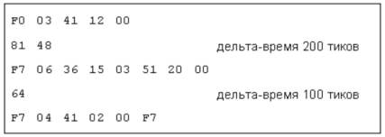
Вся эта история с пакетами порождает интересное следствие. Если статус-байт 0xF7 использовать вне контекста передачи сообщений SysEx (то есть без предшествующего 0xF0), то вслед за ним можно сохранять такие сообщения, которые вообще-то сохранению в SMF не подлежат (общесистемные сообщения и сообщения реального времени: MTC Quarter Frame, MIDI Clock, Song Position Pointer, Song Select и т. д.). Если байт 0xF7 используется подобным образом, то вся конструкция (рис. 17) называется ESCAPE-событием.
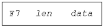
Например, сообщение остановки ритм-машины и последующего запуска воспроизведения через 48 тиков может храниться в SMF в виде следующего набора байт (рис. 18).
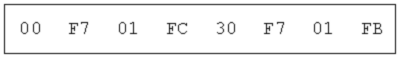
Мета-события
Мета-события, как говорилось ранее, предназначены для хранения дополнительной информации (необходимой секвенсорам и проигрывателям файлов), которая не передается по MIDI-интерфейсу. Мета-событие начинается со статус-байта 0xFF (который в протоколе MIDI означает команду сброса, System Reset; таким образом, в SMF он переопределен). Затем идет тип мета-события (один байт, так что всего возможно до 128 мета-событий), затем — длина данных, выраженная в форме величины переменной длины, затем — сами данные (рис. 19). Метасобытия, происходящие в одно и то же время, могут выполняться в любом порядке.
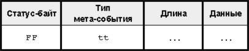
На сегодняшний день определены 17 мета-событий. Так же, как и с блоками, в будущем могут быть определены их новые типы, которые не будут узнаваться старыми программами. Секвенсор или другая программа не обязаны поддерживать все мета-события, определенные спецификацией.
Sequence Number (0x00). Это необязательное мета-событие имеет структуру, показанную на рис. 20. Оно задает номер секвенции (паттерна), на который можно ссылаться в дальнейшем при помощи сообщений MIDI Cueing. В таком виде это мета-событие имеет смысл только для формата 2, поскольку в файлах формата 0 и 1 есть только одна секвенция (то есть целая композиция). Событие должно располагаться в начале трека, перед любым событием с ненулевым дельта-временем, и перед любым другим MIDI-событием. Если номер секвенции опущен, то считается, что секвенции (паттерны) следуют в порядке расположения блоков трека в файле. Если необходимо сохранить несколько многотрековых композиций в виде группы файлов формата 0 или 1, то событие Sequence Number может использоваться в качестве номера файла.
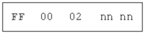
Text Event (0x01). Событие задает любое количество текста, описывающего все, что угодно. Структура события показана на рис. 21. Длина текста задается переменным способом (то есть в виде величины переменной длины). Текстовые мета-события могут располагаться в любом месте трека и использоваться в качестве "подстрочника" (то есть, слов песни, lyrics) или описания опорных точек (маркеров). Текст должен представлять собой печатные ASCII-символы. Допускаются символы за пределами этого набора (верхние 128, там, где обычно располагаются национальные кодировки). Программы, которые не поддерживают расширенный набор, должны игнорировать такие символы (на деле многие секвенсоры вместо русских букв выводят "кракозяблы").
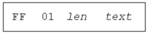
К текстовым событиям относятся еще несколько (до типа 0x0F). Ко всем им применимо сказанное ранее, только служат эти события разным целям.
Copyright Notice (0x02). Содержит заметку об авторских правах. Заметка должна содержать символы "(", "C" и ")", год и владельца авторских прав. Если в одном файле содержатся несколько произведений, все заметки об авторских правах должны быть размещены в начале файла. Заметка должна быть первым событием в первом блоке трека в момент времени 0.
Sequence/Track Name (0x03). Содержит название произведения (если находится в файле формата 0 или в первом блоке трека в файле формата 1), в остальных случаях — название трека.
Instrument Name (0x04). Содержит название инструмента, которым должен исполняться трек.
Lyric (0x05). Задает слова песни, которые должны быть исполнены в указанное время. Обычно каждый слог представлен отдельным событием Lyric, то есть для каждого слога четко задано время исполнения. В 1997 году организация MMA расширила это событие, добавив команды форматирования при выводе текста на экран, поддержку многобайтовой кодировки символов и Unicode, а также информацию о произведении (название, композитор, исполнитель). Расширенное мета-событие Lyric предложено называть Lyric/Display Meta Event.
Marker (0x06). Событие располагается обычно на первом блоке трека в файле формата 1 (или на единственном треке формата 0). Определяет позицию внутри произведения и одновременно задает ее имя.
Cue Point (0x07). Задает точку привязки партитуры к моменту кино-, видео- или сценического действия и одновременно описание момента (например, "Машина въехала в дерево", "Герой получил пощечину").
Program Name (0x08). Это мета-событие служит для визуальной ориентировки и информирования пользователя об используемом имени пэтча на данном канале. Непосредственно за этим событием должны следовать события Bank Select и Program Change, посредством которым реально выбирается пэтч. Если на протяжении звучания трека на том же MIDI-канале изменяется пэтч, событие Program Name может встречаться перед каждым таким изменением.
Device Name (0x09). Это мета-событие позволяет в одном MIDI-файле задать несколько устройств воспроизведения (тон-генераторов), то есть реализовать более 16 MIDI-каналов. Например, в аранжировке могут быть задействованы два тон-генератора, первый подключен к порту "MIDI Out 3" интерфейса, второй — к порту "MIDI Out 4" (такое имя портам присвоила операционная система). Выход одного трека направлен на пятый MIDI-канал порта "MIDI Out 3", выход другого — также на пятый MIDI-канал, но порта "MIDI Out 4". Тогда в SMF формата 1 будут сохранены два блока треков, в каждом из которых события будут происходить на пятом канале, но у треков будет разное мета-событие Device Name ("MIDI Out 3" и "MIDI Out 4" соответственно).
Имя устройства можно задавать произвольно, ориентируясь на текущее оборудование и способ его подключения. При работе на одном компьютере с одним набором и способом коммутации внешних устройств событие Device Name со своей задачей справляется прекрасно. Но стоит загрузить полученный MIDI-файл на компьютер, оснащенный другими устройствами, названия устройств из файла окажутся бесполезными (остается только рассчитывать на интеллектуальные способности секвенсора, который по названию устройств сможет "догадаться" о том, на какой синтезатор лучше направить выход с трека).
Событие Device Name должно присутствовать только один раз, в самом начале трека, перед любыми MIDI-событиями. Таким образом, файл формата 0 может иметь только одно устройство воспроизведения.
MIDI Channel Prefix (0x20). Структура события показана на рис. 22. Поскольку SysEx-события и мета-события не содержат в статус-байте номер MIDI-канала, нужен способ привязки этих событий к MIDI-каналу. Событие MIDI Channel Prefix содержит номер MIDI-канала, с которым ассоциируются все последующие SysEx- и мета-события. Канал, заданный таким образом, остается действительным до следующего нормального MIDI-события (которое содержит номер канала) или до следующего мета-события MIDI Channel Prefix.
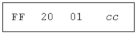
Если каждый трек в секвенсоре соответствует одному MIDI-каналу, то при записи аранжировки в формате 0 это мета-событие помогает сохранить связь мета-событий с конкретным треком. Подобная возможность предусмотрена и в формате файлов Yamaha ESEQ.
End of Track. (0x2F). Это обязательное мета-событие (рис. 23) указывает момент окончания трека. Должно быть последним событием внутри блока трека. Точный момент окончания трека необходим секвенсорам для возможности воспроизведения трека в цикле или стыковки его с другим треком.
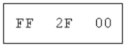
Set Tempo (0x51). Задает текущий темп в необычном измерении — микросекунды на четверть (структура события показана на рис. 24). Представление темпа в виде "время на четверть" вместо "четверть за время" позволяет осуществить точную долговременную синхронизацию при работе по протоколу MTC или SMPTE. В этом случае конец четырехминутной композиции при темпе 120 BPM будет определяться с точностью не хуже 500 микросекунд. Например, при темпе 120 BPM в одной четверти содержится 500000 микросекунд (три байта данных события равны 0x07A120).
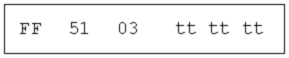
|
Преобразование дельта-времени в миллисекунды Для преобразования дельта-времени в миллисекунды необходимы два блока информации: количество тиков в четверти и текущий темп (обычно задан соответствующим мета-событием в треке темпа/размера). Темп выражается в микросекундах на четверть (т. е. 500000 мкс соответствуют темпу 120 BPM, так как 120 BPM — это одна четверть в 0,5 с). Для преобразования дельта-времени в миллисекунды используется следующая формула: 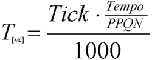 Так, если число тиков 3240, темп 120 BPM (500000 мкс на четверть), 96 тиков в четверти (96 PPQN), время в миллисекундах равно 3240 x (500000/96) / 1000 = 16875 мс (или 16,875 с). В реальной жизни SMF может содержать изменения темпа и размера, так что поиск расчетного времени для каждого тика оказывается непростой задачей.
|
SMPTE Offset (0x54). Структура показана на рис. 26. Это необязательное мета-событие задает время SMPTE, с которого начинается трек. Событие должно располагаться в начале трека, перед любым другим событием с ненулевым дельта-временем, и перед любым MIDI-событием. В файле формата 1 смещение SMPTE должно храниться с картой темпа на первом треке. Поле ff содержит сотые доли кадра, даже в том случае, если в блоке заголовка определено другое количество тиков на кадр.
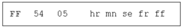
Time Signature (0x58). Событие задает музыкальный размер, структура показана на рис. 27. Поля nn и dd — числитель и знаменатель размера, при этом знаменатель является степенью числа 2. Поле cc задает число сообщений MIDI Clock, приходящихся на один удар метронома. Параметр bb — это число тридцать вторых нот, приходящихся на 24 сообщения MIDI Clock (то есть на четверть). Зачем он нужен, если в четверти всегда восемь тридцать вторых? Дело в том, что некоторые секвенсоры позволяют задавать для нотации четверть произвольного размера (например, равную 48-ми сообщениям MIDI Clock). В этом случае на 24 сообщения MIDI Clock будет приходить не восемь, а четыре тридцать вторых. Событие Time Signature при размере 6/8, клике метронома на каждые три восьмых и 24-х MIDI Clock в четверти будет выглядеть как 0xFF 0x58 0x04 0x06 0x03 0x24 0x08.
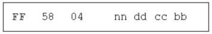
Key Signature (0x59). Событие задает текущую тональность (точнее, ладотональность — высоту и наклонение лада, мажор/минор), рис. 28. Поле sf содержит количество ключевых знаков в тональности (от -7 до +7, отрицательные значения — бемоли, положительные — диезы, нулевое значение — тональность До мажор или Ля минор). Поле mi уточняет наклонение: 0 (мажор), 1 (минор).
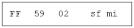
Sequencer-Specific Meta-Event (0x7F). Это событие (рис. 29) применяется аналогично системным эксклюзивным сообщениями в протоколе MIDI. То есть, позволяет записывать в MIDI-файл информацию, специфичную для конкретного секвенсора. Длина события выражается переменным способом. Первый байт данных (или три байта) содержат ID производителя. Остальной формат события определяется конкретным производителем под конкретную программу или семейство программ. Так же, как и с SysEx, производителям рекомендуется публиковать формат событий Sequencer-Specific, чтобы другие могли знать, как их использовать.
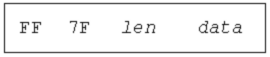
|
Файлы для караоке Появление стандартных MIDI-файлов привело к развитию целой индустрии караоке — специальных программ-проигрывателей, отображающих тексты песен синхронно с инструментальной версией композиции, воспроизводимой синтезатором звуковой платы. В большинстве своем файлы для караоке имеют расширение KAR и представляют собой самые обыкновенные MIDI-файлы с добавленным "подстрочником". Это означает, что если вы наткнулись на подобный файл, но в системе не установлен караоке-плеер, достаточно изменить расширение KAR на MID, и вы получите стандартный MIDI-файл. Расширение KAR впервые применила известная компания Tune 1000 Corp (www.tune1000.co.uk), которая сегодня является признанным лидером в индустрии караоке и продает десятки тысяч файлов любителям "попеть в микрофон". Особенность файлов KAR — слова песни в них хранятся не в мета-событиях Lyric, а в текстовых событиях общего назначения (Text Meta Event). Существуют и другие караоке-форматы, такие как TXK, CRT, ST3, TAB. Они содержат, наряду со звуком и текстом, графику и даже гитарные табулатуры. Естественно, ни о какой совместимости с SMF в этом случае речи не идет, хотя внутри себя такие файлы могут скрывать SMF в чистом виде.
|
MIDI-файл своими руками
То, что описано в этом разделе, не рекомендуется повторять слабонервным. Мы изучили формат SMF и теперь без всякого секвенсора можем руками забить MIDI-файл в шестнадцатеричном редакторе. Хороших редакторов много, но для данного примера я использовал бесплатный XVI32 2.51 (его можно скачать по адресу www.handshake.de, архив занимает около 500 Кбайт).
Главное окно программы (рис. 30) устроено очень просто — в левой части расположены ячейки для ввода шестнадцатеричных чисел, в правой — контрольная панель, в которой отображаются ASCII-символы, соответствующие шестнадцатеричным кодам левой части. Коды, которым не соответствуют печатные символы, выглядят всякими значками. Лучше настроить размер окна так, чтобы в одной строке левой панели располагалось 16 ячеек (то есть 16 байт). Смещение от начала файла (адрес начала строки) показано в крайнем левом столбце. На рисунке для примера открыт типичный MIDI-файл.
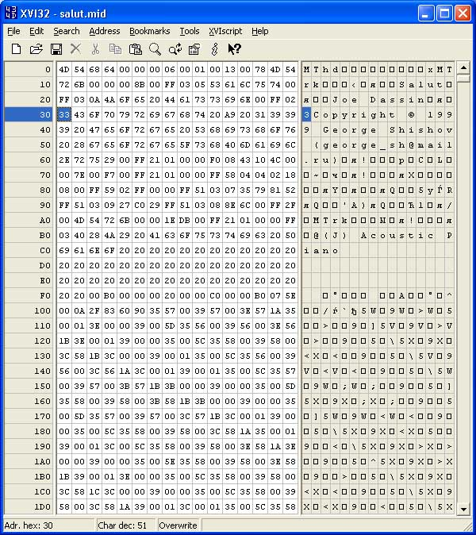
Поскольку забивать MIDI-файл кодами — это все же извращение, пример будет чрезвычайно простой: три трека, последовательно содержащие ноты До-мажорного аккорда в широком расположении (рис. 31). На первом MIDI-канале используется пэтч номер 3, на втором — номер 17, на третьем — номер 47. Забив этот пример, вы, что называется, телом прочувствуете формат SMF.
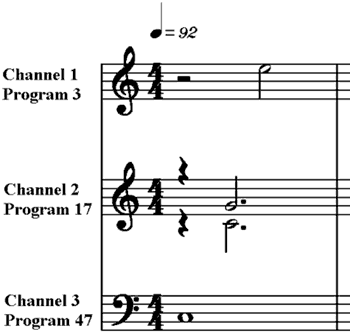
В таблице на рис. 32 показаны коды для SMF формата 0, на рис. 33 — коды для формата 1. Для удобства приведены короткие комментарии.
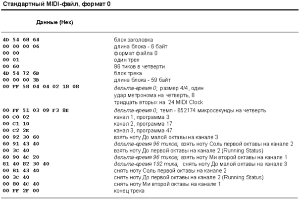
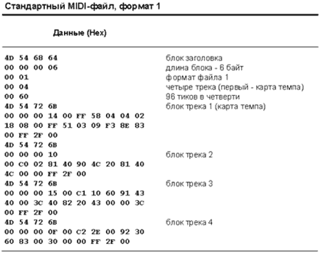
В окне программы XVI32 файл формата 1 будет выглядеть так, как показано на рис. 34. После того, как файл набит, его нужно сохранить (File — Save As), присвоив произвольное имя и расширение MID. Остается рискнуть и воспроизвести! Двойной щелчок в проводнике Windows — и, если при наборе не было допущено ошибок, вы услышите желанный аккорд.
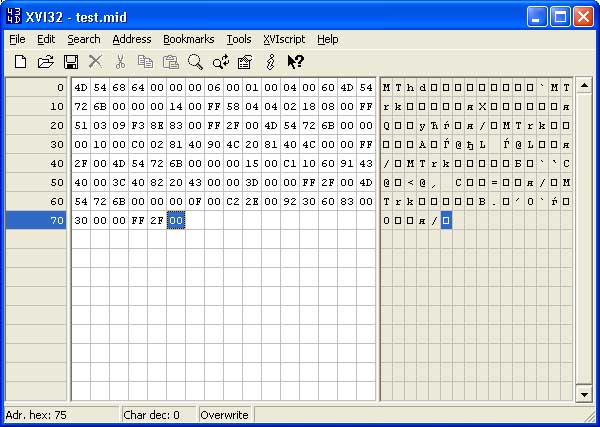